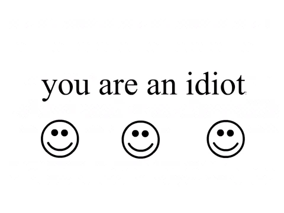

YOU ARE AN IDIOT
You Are An Idiot! es un sitio web troll en el cual al entrar aparecer tres caritas smileys con el texto "YOU ARE AN IDIOT" y una música de fondo de un coro cantando la frase en bucle. Dicho sitio web es imposible de cerrar ya que usa un script que impedirá cerrar la ventana y abrirá nuevos procesos de la animación de You Are An Idiot! hasta que la computadora se congele, forzando a reiniciarla.
Según Kaspersky, el nombre técnico de este troyano es Trojan.JS.Offiz.
YOU ARE IDIOT es una bomba fork(es una bomba que cada vez explota crea 2 nuevas)
El sitio web con la animación flash se registro originalmente bajo el dominio de Youdontknowhoiam.org (No buscar) en el año 2002. El sitio web actual, youareanidiot.org, se registro bajo el nombre de una persona llamada Andrew Regner en el año 2004. La versión original del sitio web contenía un script malicioso, sin embargo a partir de 2013 se borro dicho script y solo reproduce la animación normalmente. El dominio youareanidiot.org dejo de existir a partir de 2019 y se puso en venta. Hoy en día se ha creado otro nuevo dominio llamado youareanidiot.com.
You Are An Idiot! es una animación con un texto escrito en fuente Times New Roman (el signo de exclamación al final de la letra "t" es tan pequeño que apenas se puede ver) el cual consta simplemente de la siguiente frase:
you are an idiot!
Seguida de unas tres caritas smileys (☺ ☺ ☺)

Funciona por medio del clickbait, ya que el usuario podría interesarse en hacer clic en el link gracias a la psicología inversa. (Por eso el título del troyano llama al usuario "un idiota").
El vídeo intercambia el fondo de blanco a negro y viceversa mientras que el color de la fuente también alterna entre el blanco y negro de una manera que se puede considerar epiléptica. Se puede escuchar un coro que canta "You are an idiot! Ha ha ha ha ha ha ha ha ha ha ha ha ha!" tratando de provocar a quien lo escuche.
Al intentar cerrar la ventana de You Are An Idiot! se abrirán 6 nuevas ventanas en miniatura que comenzaran a moverse por toda la pantalla. Esto se repetirá cada vez que se intente cerrar una de las ventanas producidas por el virus. Eventualmente la computadora dejara de funcionar y se forzara un reinicio. Una vez reiniciada la computadora, la infección y sus síntomas desaparecen del equipo afectado por el virus de Youareanidiot.org. Presionar Ctrl + Alt + Supr/Del o Alt + F4 no funcionaría, solo haría aparecer una ventana diciendo "You are an idiot!". Otra manera de deshacerse del virus es matar los procesos del navegador desde el Administrador de Tareas (Task Manager).
El malware fue eliminado del sitio web original. Sin embargo, el usuario de YouTube Computer Virus Watch recreo el virus en el año 2013 y publico su código, permitiendo que varias paginas clon/replica aparecieran en la web. Existe una versión ejecutable (como un programa .exe).